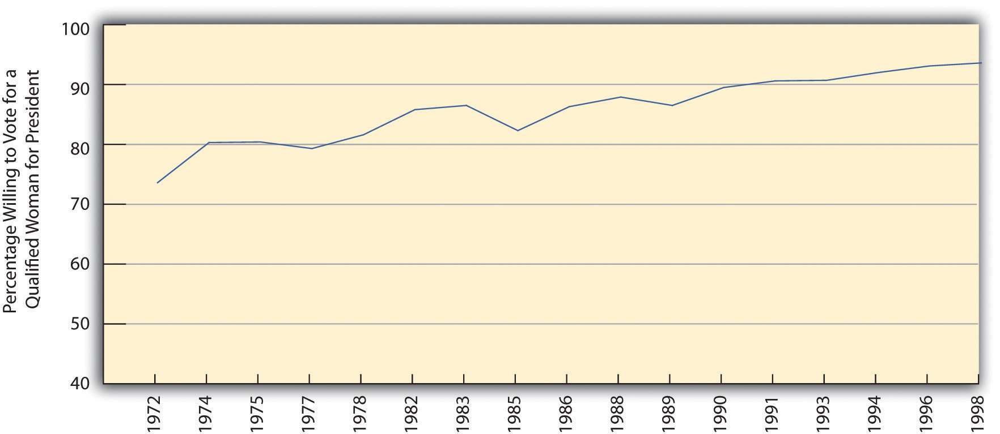
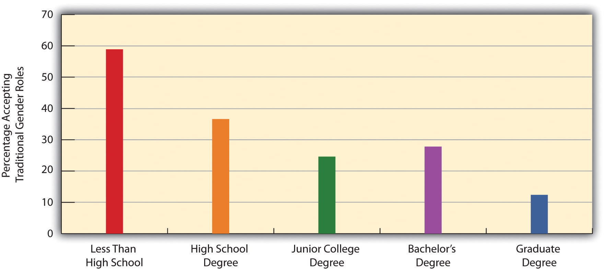
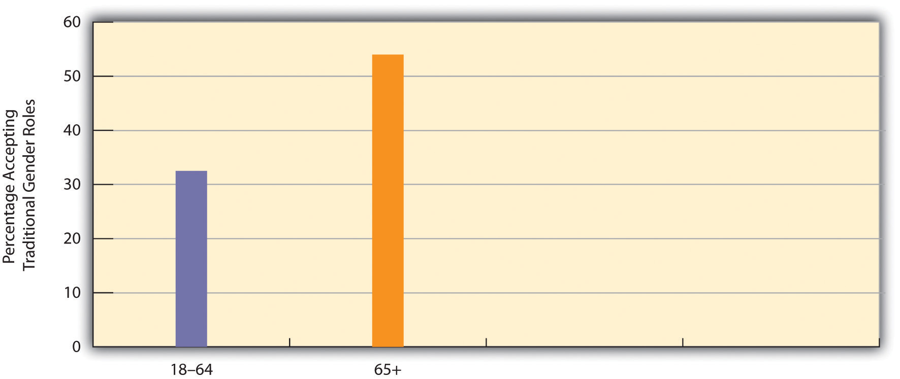

September 2009 was Rape Awareness Month at the University of Missouri–Columbia. The coordinator of the Relationship & Sexual Violence Prevention Center (RSVP), the group sponsoring the month-long series of events, said they chose September because of the high rates of sexual violence committed against new women students during the first few weeks of the semester. As on many campuses around the country since the late 1970s, a Take Back the Night march and rally was the highlight of RSVP’s effort to call attention to violence against women. An RSVP staff member explained that Take Back the Night marches began when women decided, “No, we’re not going to live in fear, we’re not going to stay inside, these are our streets. This is our community; we’re not going to be frightened.” At her own campus, she said, “It’s women getting together and saying, ‘You know what, these are our lives. We own these streets just like anyone else, we walk these streets just like anyone else.’ It’s a very empowering kind of event and evening.” (Silverman, 2009)Silverman, J. (2009, September 1). RSVP educates students for Rape Awareness Month. The Maneater [Official student newspaper of the University of Missouri–Columbia]. Retrieved from http://www.themaneater.com/stories/2009/9/1/rsvp-educates-students-rape-awareness-month
It was the early 1970s. Susan (a pseudonym), a sophomore college student, wanted to become a physician, so she went to talk to her biology professor about the pre-med program at her school. The professor belittled her interest in medicine and refused to discuss the program. Women, he advised her, should just become wives and mothers and leave the doctoring to men.
At the same college and about the same time, John (also a pseudonym) went to talk to a draft counselor for advice as he considered his options, including military service in Vietnam. John said he had something very embarrassing to say and hesitated a long time before speaking. Finally John explained, as if revealing a deep secret, that he had never liked to fight, not even as a young boy, and wondered aloud if there was something wrong with him. It was not that he was scared to fight, he assured the draft counselor, it was that he thought fighting was wrong, even though his friends had sometimes called him a “sissy” and other words for refusing to fight. John was advised that he might qualify as a conscientious objector and was informed about that and his other alternatives to being drafted. He left the room, and the draft counselor never saw him again.
Much has changed during the almost four decades since these two real-life stories occurred and since Take Back the Night marches began. Women have entered medicine, engineering, and other professions and careers in unprecedented numbers, no doubt dismaying the biology professor who thought them best suited as wives and mothers. Many men have begun to realize that “real men” do not necessarily have to enjoy fighting and other traditionally male behaviors and attitudes. Our society now has an awareness of rape and other violence against women that would astonish students of the 1970s. Still, gender roles and gender inequality persist and violence against women continues, with important consequences for both women and men and for society as a whole. To begin our discussion of gender and gender inequality, this chapter begins with a critical look at the concepts of sex and gender.
Although the terms sex and gender are sometimes used interchangeably and do in fact complement each other, they nonetheless refer to different aspects of what it means to be a woman or man in any society.
SexThe anatomical and other biological differences between females and males that are determined at the moment of conception and develop in the womb and throughout childhood and adolescence. refers to the anatomical and other biological differences between females and males that are determined at the moment of conception and develop in the womb and throughout childhood and adolescence. Females, of course, have two X chromosomes, while males have one X chromosome and one Y chromosome. From this basic genetic difference spring other biological differences. The first to appear are the different genitals that boys and girls develop in the womb and that the doctor (or midwife) and parents look for when a baby is born (assuming the baby’s sex is not already known from ultrasound or other techniques) so that the momentous announcement, “It’s a boy!” or “It’s a girl!” can be made. The genitalia are called primary sex characteristicsAnatomical and other biological differences between females and males that begin developing in the womb., while the other differences that develop during puberty are called secondary sex characteristicsBiological differences between females and males that emerge during puberty. and stem from hormonal differences between the two sexes. In this difficult period of adolescents’ lives, boys generally acquire deeper voices, more body hair, and more muscles from their flowing testosterone. Girls develop breasts and wider hips and begin menstruating as nature prepares them for possible pregnancy and childbirth. For better or worse, these basic biological differences between the sexes affect many people’s perceptions of what it means to be female or male, as we shall soon discuss.
If sex is a biological concept, then genderThe social and cultural differences a society assigns to people based on their biological sex. is a social concept. It refers to the social and cultural differences a society assigns to people based on their (biological) sex. A related concept, gender rolesA society’s expectations of people’s behavior and attitudes based on whether they are females or males., refers to a society’s expectations of people’s behavior and attitudes based on whether they are females or males. Understood in this way, gender, like race as discussed in Chapter 7 "Deviance, Crime, and Social Control", is a social construction. How we think and behave as females and males is not etched in stone by our biology but rather is a result of how society expects us to think and behave based on what sex we are. As we grow up, we learn these expectations as we develop our gender identityIndividuals’ beliefs about themselves as either females or males., or our beliefs about ourselves as females or males.
These expectations are called femininity and masculinity. FemininityCultural expectations of girls and women, including gentleness and attractiveness. refers to the cultural expectations we have of girls and women, while masculinityCultural expectations of boys and men, including toughness and bravery. refers to the expectations we have of boys and men. A familiar nursery rhyme nicely summarizes these two sets of traits:
What are little boys made of?
Snips and snails,
And puppy dog tails,
That’s what little boys are made of.
What are little girls made of?
Sugar and spice,
And everything nice,
That’s what little girls are made of.
As this nursery rhyme suggests, our traditional notions of femininity and masculinity indicate that we think females and males are fundamentally different from each other. In effect, we think of them as two sides of the same coin of being human. What we traditionally mean by femininity is captured in the adjectives, both positive and negative, we traditionally ascribe to women: gentle, sensitive, nurturing, delicate, graceful, cooperative, decorative, dependent, emotional, passive, and weak. Thus when we say that a girl or woman is very feminine, we have some combination of these traits, usually the positive ones, in mind: she is soft, dainty, pretty, even a bit flighty. What we traditionally mean by masculinity is captured in the adjectives, again both positive and negative, our society traditionally ascribes to men: strong, assertive, brave, active, independent, intelligent, competitive, insensitive, unemotional, and aggressive. When we say that a boy or man is very masculine, we have some combination of these traits in mind: he is tough, strong, and assertive.
These traits might sound like stereotypes of females and males in today’s society, and to some extent they are, but differences between men and women in attitudes and behavior do in fact exist (Aulette, Wittner, & Blakeley, 2009).Aulette, J. R., Wittner, J., & Blakeley, K. (2009). Gendered worlds. New York, NY: Oxford University Press. For example, women cry more often than men do. Men are more physically violent than women. Women take care of children more than men do. Women smile more often than men. Men curse more often than women. When women talk with each other, they are more likely to talk about their personal lives than men are when they talk with each other (Tannen, 2001).Tannen, D. (2001). You just don’t understand: Women and men in conversation. New York, NY: Quill. The two sexes even differ when they hold a cigarette (not that anyone should smoke). When a woman holds a cigarette, she usually has the palm of her cigarette-holding hand facing upward. When a man holds a cigarette, he usually has his palm facing downward.
Sexual orientationPreference for sexual relationships with individuals of the opposite sex, the same sex, or both sexes. refers to a person’s preference for sexual relationships with individuals of the other sex (heterosexuality), one’s own sex (homosexuality), or both sexes (bisexuality). The term also increasingly refers to transgendered individuals, those whose behavior, appearance, and/or gender identity fails to conform to conventional norms. Transgendered individuals include transvestites (those who dress in the clothing of the opposite sex) and transsexuals (those whose gender identity differs from the physiological sex and who sometimes undergo a sex change).
It is difficult to know precisely how many people are gay, lesbian, bisexual, or transgendered. One problem is conceptual. For example, what does it mean to be gay or lesbian? Does one need to actually have sexual relations with a same-sex partner to be considered gay? What if someone is attracted to same-sex partners but does not actually engage in sex with such persons? What if someone identifies as heterosexual but engages in homosexual sex for money (as in certain forms of prostitution) or for power and influence (as in much prison sex)? These conceptual problems make it difficult to determine the extent of homosexuality.
A second problem is empirical. Even if we can settle on a definition of homosexuality, how do we then determine how many people fit this definition? For better or worse, our best evidence of the number of gays and lesbians in the United States comes from surveys of national samples of Americans in which they are asked various questions about their sexuality. Although these are anonymous surveys, obviously at least some individuals may be reluctant to disclose their sexual activity and thoughts to an interviewer. Still, scholars think the estimates from these surveys are fairly accurate but that they probably underestimate by at least a small amount the number of gays and lesbians.
A widely cited survey carried out by researchers at the University of Chicago found that 2.8% of men and 1.4% of women identified themselves as gay/lesbian or bisexual, with greater percentages reporting having had sexual relations with same-sex partners or being attracted to same-sex persons (see Table 11.1 "Prevalence of Homosexuality in the United States"). In the 2008 General Social Survey, 2.2% of men and 3.5% of women identified themselves as gay/lesbian or bisexual. Among individuals having had any sexual partners since turning 18, 2.2% of men reported having had at least some male partners, while 4.6% of women reported having had at least some female partners. Although precise numbers must remain unknown, it seems fair to say that between about 2% and 5% of Americans are gay/lesbian or bisexual.
Table 11.1 Prevalence of Homosexuality in the United States
| Activity, attraction, or identity | Men (%) | Women (%) |
|---|---|---|
| Find same-sex sexual relations appealing | 4.5 | 5.6 |
| Attracted to people of same sex | 6.2 | 4.4 |
| Identify as gay or bisexual | 2.8 | 1.4 |
| At least one sex partner of same sex during past year among those sexually active | 2.7 | 1.3 |
| At least one sex partner of same sex since turning 18 | 4.9 | 4.1 |
Source: Data from Laumann, E. O., Gagnon, J. H., Michael, R. T., & Michaels, S. (1994). The social organization of sexuality. Chicago, IL: University of Chicago Press.
If it is difficult to determine the number of people who are gay/lesbian or bisexual, it is even more difficult to determine why some people have this sexual orientation while most do not have it. Scholars disagree on the “causes” of sexual orientation (Engle, McFalls, Gallagher, & Curtis, 2006; Sheldon, Pfeffer, Jayaratne, Feldbaum, & Petty, 2007).Engle, M. J., McFalls, J. A., Jr., Gallagher, B. J., III, & Curtis, K. (2006). The attitudes of American sociologists toward causal theories of male homosexuality. The American Sociologist, 37(1), 68–67; Sheldon, J. P., Pfeffer, C. A., Jayaratne, T. E., Feldbaum, M., & Petty, E. M. (2007). Beliefs about the etiology of homosexuality and about the ramifications of discovering its possible genetic origin. Journal of Homosexuality, 52(3/4), 111–150. Some scholars attribute it to unknown biological factor(s) over which individuals have no control, just as individuals do not decide whether they are left-handed or right-handed. Supporting this view, many gays say they realized they were gay during adolescence, just as straights would say they realized they were straight during their own adolescence. Other scholars say that sexual orientation is at least partly influenced by cultural norms, so that individuals are more likely to identify as gay or straight depending on the cultural views of sexual orientation into which they are socialized as they grow up. At best, perhaps all we can say is that sexual orientation stems from a complex mix of biological and cultural factors that remain to be determined.
What accounts for differences in female and male behavior and attitudes? Do the biological differences between the sexes account for other differences? Or do these latter differences stem, as most sociologists think, from cultural expectations and from differences in the ways in which the sexes are socialized? These are critical questions, for they ask whether the differences between boys and girls and women and men stem more from biology or from society. As Chapter 2 "Eye on Society: Doing Sociological Research" pointed out, biological explanations for human behavior implicitly support the status quo. If we think behavioral and other differences between the sexes are due primarily to their respective biological makeups, we are saying that these differences are inevitable or nearly so and that any attempt to change them goes against biology and will likely fail.
As an example, consider the obvious biological fact that women bear and nurse children and men do not. Couple this with the common view that women are also more gentle and nurturing than men, and we end up with a “biological recipe” for women to be the primary caretakers of children. Many people think this means women are therefore much better suited than men to take care of children once they are born, and that the family might be harmed if mothers work outside the home or if fathers are the primary caretakers. Figure 11.1 "Belief That Women Should Stay at Home" shows that more than one-third of the public agrees that “it is much better for everyone involved if the man is the achiever outside the home and the woman takes care of the home and family.” To the extent this belief exists, women may not want to work outside the home or, if they choose to do so, they face difficulties from employers, family, and friends. Conversely, men may not even think about wanting to stay at home and may themselves face difficulties from employees, family, and friends if they want to do so. A belief in a strong biological basis for differences between women and men implies, then, that there is little we can or should do to change these differences. It implies that “anatomy is destiny,” and destiny is, of course, by definition inevitable.
Figure 11.1 Belief That Women Should Stay at Home

Agreement or disagreement with statement that “it is much better for everyone involved if the man is the achiever outside the home and the woman takes care of the home and family.”
Source: Data from General Social Survey, 2008.
This implication makes it essential to understand the extent to which gender differences do, in fact, stem from biological differences between the sexes or, instead, stem from cultural and social influences. If biology is paramount, then gender differences are perhaps inevitable and the status quo will remain. If culture and social influences matter much more than biology, then gender differences can change and the status quo may give way. With this backdrop in mind, let’s turn to the biological evidence for behavioral and other differences between the sexes and then examine the evidence for their social and cultural roots.
Several biological explanations for gender roles exist, and we discuss two of the most important ones here. One explanation is from the related fields of sociobiology (see Chapter 2 "Eye on Society: Doing Sociological Research") and evolutionary psychology (Workman & Reader, 2009)Workman, L., & Reader, W. (2009). Evolutionary psychology (2nd ed.). New York, NY: Cambridge University Press. and argues an evolutionary basis for traditional gender roles.
Scholars advocating this view reason as follows (Barash, 2007; Thornhill & Palmer, 2000).Barash, D. P. (2007). Natural selections: Selfish altruists, honest liars, and other realities of evolution. New York, NY: Bellevue Literary Press; Thornhill, R., & Palmer, C. T. (2000). A natural history of rape: Biological bases of sexual coercion. Cambridge, MA: MIT Press. In prehistoric societies, few social roles existed. A major role centered on relieving hunger by hunting or gathering food. The other major role centered on bearing and nursing children. Because only women could perform this role, they were also the primary caretakers for children for several years after birth. And because women were frequently pregnant, their roles as mothers confined them to the home for most of their adulthood. Meanwhile, men were better suited than women for hunting because they were stronger and quicker than women. In prehistoric societies, then, biology was indeed destiny: for biological reasons, men in effect worked outside the home (hunted), while women stayed at home with their children.
Evolutionary reasons also explain why men are more violent than women. In prehistoric times, men who were more willing to commit violence against and even kill other men would “win out” in the competition for female mates. They thus were more likely than less violent men to produce offspring, who would then carry these males’ genetic violent tendencies. By the same token, men who were prone to rape women were more likely to produce offspring, who would then carry these males’ “rape genes.” This early process guaranteed that rape tendencies would be biologically transmitted and thus provided a biological basis for the amount of rape that occurs today.
If the human race evolved along these lines, sociobiologists and evolutionary psychologists continue, natural selection favored those societies where men were stronger, braver, and more aggressive and where women were more fertile and nurturing. Such traits over the millennia became fairly instinctual, meaning that men’s and women’s biological natures evolved differently. Men became, by nature, more assertive, daring, and violent than women, and women are, by nature, more gentle, nurturing, and maternal than men. To the extent this is true, these scholars add, traditional gender roles for women and men make sense from an evolutionary standpoint, and attempts to change them go against the sexes’ biological natures. This in turn implies that existing gender inequality must continue because it is rooted in biology. As the title of a book presenting the evolutionary psychology argument summarizes this implication, “biology at work: rethinking sexual equality” (Browne, 2002).Browne, K. (2002). Biology at work: Rethinking sexual equality. New Brunswick, NJ: Rutgers University Press.
Critics challenge the evolutionary explanation on several grounds (Hurley, 2007; Buller, 2006; Begley, 2009).Hurley, S. (2007). Sex and the social construction of gender: Can feminism and evolutionary psychology be reconciled? In J. Browne (Ed.), The future of gender (pp. 98–115). New York, NY: Cambridge University Press; Buller, D. J. (2006). Adapting minds: Evolutionary psychology and the persistent quest for human nature. Cambridge, MA: MIT Press; Begley, S. (2009, June 29). Don’t blame the caveman. Newsweek 52–62. First, much greater gender variation in behavior and attitudes existed in prehistoric times than the evolutionary explanation assumes. Second, even if biological differences did influence gender roles in prehistoric times, these differences are largely irrelevant in today’s world, in which, for example, physical strength is not necessary for survival. Third, human environments throughout the millennia have simply been too diverse to permit the simple, straightforward biological development that the evolutionary explanation assumes. Fourth, evolutionary arguments implicitly justify existing gender inequality by implying the need to confine women and men to their traditional roles.
Recent anthropological evidence also challenges the evolutionary argument that men’s tendency to commit violence, including rape, was biologically transmitted. This evidence instead finds that violent men have trouble finding female mates who would want them and that the female mates they find and the children they produce are often killed by rivals to the men. The recent evidence also finds those rapists’ children are often abandoned and then die. As one anthropologist summarizes the rape evidence, “The likelihood that rape is an evolved adaptation [is] extremely low. It just wouldn’t have made sense for men in the [prehistoric epoch] to use rape as a reproductive strategy, so the argument that it’s preprogrammed into us doesn’t hold up” (Begley, 2009, p. 54).Begley, S. (2009, June 29). Don’t blame the caveman. Newsweek 52–62.
A second biological explanation for traditional gender roles centers on hormones and specifically on testosterone, the so-called male hormone. One of the most important differences between boys and girls and men and women in the United States and many other societies is their level of aggression. Simply put, males are much more physically aggressive than females and in the United States commit about 85%–90% of all violent crimes (see Chapter 7 "Deviance, Crime, and Social Control"). Why is this so? As Chapter 7 "Deviance, Crime, and Social Control" pointed out, this gender difference is often attributed to males’ higher levels of testosterone (Mazur, 2009).Mazur, A. (2009). Testosterone and violence among young men. In A. Walsh & K. M. Beaver (Eds.), Biosocial criminology: New directions in theory and research (pp. 190–204). New York, NY: Routledge.
To see whether testosterone does indeed raise aggression, researchers typically assess whether males with higher testosterone levels are more aggressive than those with lower testosterone levels. Several studies find that this is indeed the case. For example, a widely cited study of Vietnam-era male veterans found that those with higher levels of testosterone had engaged in more violent behavior (Booth & Osgood, 1993).Booth, A., & Osgood, D. W. (1993). The influence of testosterone on deviance in adulthood: Assessing and explaining the relationship. Criminology, 31(1), 93–117. However, this correlation does not necessarily mean that their testosterone increased their violence: as has been found in various animal species, it is also possible that their violence increased their testosterone. Because studies of human males can’t for ethical and practical reasons manipulate their testosterone levels, the exact meaning of the results from these testosterone-aggression studies must remain unclear, according to a review sponsored by the National Academy of Sciences (Miczek, Mirsky, Carey, DeBold, & Raine, 1994).Miczek, K. A., Mirsky, A. F., Carey, G., DeBold, J., & Raine, A. (1994). An overview of biological influences on violent behavior. In J. Albert, J. Reiss, K. A. Miczek, & J. A. Roth (Eds.), Understanding and preventing violence: Biobehavioral influences (Vol. 2, pp. 1–20). Washington, DC: National Academy Press.
Another line of research on the biological basis for sex differences in aggression involves children, including some as young as ages 1 or 2, in various situations (Card, Stucky, Sawalani, & Little, 2008).Card, N. A., Stucky, B. D., Sawalani, G. M., & Little, T. D. (2008). Direct and indirect aggression during childhood and adolescence: A meta-analytic review of gender differences, intercorrelations, and relations to maladjustment. Child Development, 79(5), 1185–1229. doi:10.1111/j.1467-8624.2008.01184.x They might be playing with each other, interacting with adults, or writing down solutions to hypothetical scenarios given to them by a researcher. In most of these studies, boys are more physically aggressive in thought or deed than girls, even at a very young age. Other studies are more experimental in nature. In one type of study, a toddler will be playing with a toy, only to have it removed by an adult. Boys typically tend to look angry and try to grab the toy back, while girls tend to just sit there and whimper. Because these gender differences in aggression are found at very young ages, researchers often say they must have some biological basis. However, critics of this line of research counter that even young children have already been socialized along gender lines (Begley, 2009; Eliot, 2009),Begley, S. (2009, September 14). Pink brain, blue brain: Claims of sex differences fall apart. Newsweek 28; Eliot, L. (2009). Pink brain, blue brain: How small differences grow into troublesome gaps—and what we can do about it. Boston, MA: Houghton Mifflin Harcourt. a point to which we return later. To the extent this is true, gender differences in children’s aggression may simply reflect socialization and not biology.
In sum, biological evidence for gender differences certainly exists, but its interpretation remains very controversial. It must be weighed against the evidence, to which we next turn, of cultural variations in the experience of gender and of socialization differences by gender. One thing is clear: to the extent we accept biological explanations for gender, we imply that existing gender differences and gender inequality must continue to exist. This implication prompts many social scientists to be quite critical of the biological viewpoint. As Linda L. Lindsey (2011, p. 52)Lindsey, L. L. (2011). Gender roles: A sociological perspective (5th ed.). Upper Saddle River, NJ: Prentice Hall. notes, “Biological arguments are consistently drawn upon to justify gender inequality and the continued oppression of women.” In contrast, cultural and social explanations of gender differences and gender inequality promise some hope for change. Let’s examine the evidence for these explanations.
Some of the most compelling evidence against a strong biological determination of gender roles comes from anthropologists, whose work on preindustrial societies demonstrates some striking gender variation from one culture to another. This variation underscores the impact of culture on how females and males think and behave.
Margaret Mead (1935)Mead, M. (1935). Sex and temperament in three primitive societies. New York, NY: William Morrow. was one of the first anthropologists to study cultural differences in gender. In New Guinea she found three tribes—the Arapesh, the Mundugumor, and the Tchambuli—whose gender roles differed dramatically. In the Arapesh both sexes were gentle and nurturing. Both women and men spent much time with their children in a loving way and exhibited what we would normally call maternal behavior. In the Arapesh, then, different gender roles did not exist, and in fact, both sexes conformed to what Americans would normally call the female gender role.

Margaret Mead made important contributions to the anthropological study of gender. Her work suggested that culture dramatically influences how females and males behave and that gender is rooted much more in culture than in biology.
Source: Photo courtesy of U.S. Library of Congress, http://loc.gov/pictures/resource/cph.3c20226.
The situation was the reverse among the Mundugumor. Here both men and women were fierce, competitive, and violent. Both sexes seemed to almost dislike children and often physically punished them. In the Mundugumor society, then, different gender roles also did not exist, as both sexes conformed to what we Americans would normally call the male gender role.
In the Tchambuli, Mead finally found a tribe where different gender roles did exist. One sex was the dominant, efficient, assertive one and showed leadership in tribal affairs, while the other sex liked to dress up in frilly clothes, wear makeup, and even giggle a lot. Here, then, Mead found a society with gender roles similar to those found in the United States, but with a surprising twist. In the Tchambuli, women were the dominant, assertive sex that showed leadership in tribal affairs, while men were the ones wearing frilly clothes and makeup.
Mead’s research caused a firestorm in scholarly circles, as it challenged the biological view on gender that was still very popular when she went to New Guinea. In recent years, Mead’s findings have been challenged by other anthropologists. Among other things, they argue that she probably painted an overly simplistic picture of gender roles in her three societies (Scheper-Hughes, 1987).Scheper-Hughes, N. (1987). The Margaret Mead controversy: Culture, biology and anthropological inquiry. In H. Applebaum (Ed.), Perspectives in cultural anthropology (pp. 443–454). Albany, NY: State University of New York Press. Other anthropologists defend Mead’s work and note that much subsequent research has found that gender-linked attitudes and behavior do differ widely from one culture to another (Morgan, 1989).Morgan, S. (Ed.). (1989). Gender and anthropology: Critical reviews for research and teaching. Washington, DC: American Anthropological Association. If so, they say, the impact of culture on what it means to be a female or male cannot be ignored.
Extensive evidence of this impact comes from anthropologist George Murdock, who created the Standard Cross-Cultural Sample of almost 200 preindustrial societies studied by anthropologists. Murdock (1937)Murdock, G. (1937). Comparative data on the division of labor by sex. Social Forces, 15, 551–553. found that some tasks in these societies, such as hunting and trapping, are almost always done by men, while other tasks, such as cooking and fetching water, are almost always done by women. These patterns provide evidence for the evolutionary argument presented earlier, as they probably stem from the biological differences between the sexes. Even so there were at least some societies in which women hunted and in which men cooked and fetched water.
More importantly, Murdock found much greater gender variation in several of the other tasks he studied, including planting crops, milking, and generating fires. Men primarily performed these tasks in some societies, women primarily performed them in other societies, and in still other societies both sexes performed them equally. Figure 11.2 "Gender Responsibility for Weaving" shows the gender responsibility for yet another task, weaving. Women are the primary weavers in about 61% of the societies that do weaving, men are the primary weavers in 32%, and both sexes do the weaving in 7% of the societies. Murdock’s findings illustrate how gender roles differ from one culture to another and imply they are not biologically determined.
Figure 11.2 Gender Responsibility for Weaving
Source: Data from Standard Cross-Cultural Sample.
Anthropologists since Mead and Murdock have continued to investigate cultural differences in gender. Some of their most interesting findings concern gender and sexuality (Morgan, 1989; Brettell & Sargent, 2009).Morgan, S. (Ed.). (1989). Gender and anthropology: Critical reviews for research and teaching. Washington, DC: American Anthropological Association; Brettell, C. B., & Sargent, C. F. (Eds.). (2009). Gender in cross-cultural perspective (5th ed.). Upper Saddle River, NJ: Prentice Hall. Although all societies distinguish “femaleness” and “maleness,” additional gender categories exist in some societies. The Native Americans known as the Mohave, for example, recognize four genders: a woman, a woman who acts like a man, a man, and a man who acts like a woman. In some societies, a third, intermediary gender category is recognized. Anthropologists call this category the berdache, who is usually a man who takes on a woman’s role. This intermediary category combines aspects of both femininity and masculinity of the society in which it is found and is thus considered an androgynousContaining aspects of both femaleness and maleness, or of both femininity and masculinity. gender. Although some people in this category are born as intersexed individuals (formerly known as hermaphrodites), meaning they have genitalia of both sexes, many are born biologically as one sex or the other but adopt an androgynous identity.
An example of this intermediary gender category may be found in India, where the hirja role involves males who wear women’s clothing and identify as women (Reddy, 2006).Reddy, G. (2006). With respect to sex: Negotiating Hirja identity in South India. New Delhi, India: Yoda. The hirja role is an important part of Hindu mythology, in which androgynous figures play key roles both as humans and as gods. Today people identified by themselves and others as hirjas continue to play an important role in Hindu practices and in Indian cultural life in general. Serena Nanda (1997, pp. 200–201)Nanda, S. (1997). Neither man nor woman: The Hirjas of India. In C. B. Brettell & C. F. Sargent (Eds.), Gender in cross-cultural perspective (2nd ed., pp. 198–201). Upper Saddle River, NJ: Prentice Hall. calls hirjas “human beings who are neither man nor woman” and says they are thought of as “special, sacred beings” even though they are sometimes ridiculed and abused.
Anthropologists have found another androgynous gender composed of women warriors in 33 Native American groups in North America. Walter L. Williams (1997)Williams, W. L. (1997). Amazons of America: Female gender variance. In C. B. Brettell & C. F. Sargent (Eds.), Gender in cross-cultural perspective (2nd ed., pp. 202–213). Upper Saddle River, NJ: Prentice Hall. calls these women “amazons” and notes that they dress like men and sometimes even marry women. In some tribes girls exhibit such “masculine” characteristics from childhood, while in others they may be recruited into “amazonhood.” In the Kaska Indians, for example, a married couple with too many daughters would select one to “be like a man.” When she was about 5 years of age, her parents would begin to dress her like a boy and have her do male tasks. Eventually she would grow up to become a hunter.
The androgynous genders found by anthropologists remind us that gender is a social construction and not just a biological fact. If culture does affect gender roles, socialization is the process through which culture has this effect. What we experience as girls and boys strongly influences how we develop as women and men in terms of behavior and attitudes. To illustrate this important dimension of gender, let’s turn to the evidence on socialization.
Chapter 3 "Culture" identified several agents of socialization, including the family, peers, schools, the mass media, and religion. While that chapter’s discussion focused on these agents’ impact on socialization in general, ample evidence of their impact on gender-role socialization also exists. Such socialization helps boys and girls develop their gender identity (Andersen & Hysock, 2009).Andersen, M., & Hysock, D. (2009). Thinking about women: Sociological perspectives on sex and gender (8th ed.). Boston, MA: Allyn & Bacon.
Socialization into gender roles begins in infancy, as almost from the moment of birth parents begin to socialize their children as boys or girls without even knowing it (Begley, 2009; Eliot, 2009).Begley, S. (2009, September 14). Pink brain, blue brain: Claims of sex differences fall apart. Newsweek 28; Eliot, L. (2009). Pink brain, blue brain: How small differences grow into troublesome gaps—and what we can do about it. Boston, MA: Houghton Mifflin Harcourt. Many studies document this process (Lindsey, 2011).Lindsey, L. L. (2011). Gender roles: A sociological perspective (5th ed.). Upper Saddle River, NJ: Prentice Hall. Parents commonly describe their infant daughters as pretty, soft, and delicate and their infant sons as strong, active, and alert, even though neutral observers find no such gender differences among infants when they do not know the infants’ sex. From infancy on, parents play with and otherwise interact with their daughters and sons differently. They play more roughly with their sons—for example, by throwing them up in the air or by gently wrestling with them—and more quietly with their daughters. When their infant or toddler daughters cry, they warmly comfort them, but they tend to let their sons cry longer and to comfort them less. They give their girls dolls to play with and their boys “action figures” and toy guns. While these gender differences in socialization are probably smaller now than a generation ago, they certainly continue to exist. Go into a large toy store and you will see pink aisles of dolls and cooking sets and blue aisles of action figures, toy guns, and related items.
Peer influences also encourage gender socialization. As they reach school age, children begin to play different games based on their gender (see the “Sociology Making a Difference” box). Boys tend to play sports and other competitive team games governed by inflexible rules and relatively large numbers of roles, while girls tend to play smaller, cooperative games such as hopscotch and jumping rope with fewer and more flexible rules. Although girls are much more involved in sports now than a generation ago, these gender differences in their play as youngsters persist and continue to reinforce gender roles. For example, they encourage competitiveness in boys and cooperation and trust among girls. Boys who are not competitive risk being called “sissy” or other words by their peers. The patterns we see in adult males and females thus have their roots in their play as young children (King, Miles, & Kniska, 1991).King, W. C., Jr., Miles, E. W., & Kniska, J. (1991). Boys will be boys (and girls will be girls): The attribution of gender role stereotypes in a gaming situation. Sex Roles, 25, 607–623.
Gender Differences in Children’s Play and Games
In considering the debate, discussed in the text, between biology and sociology over the origins of gender roles, some widely cited studies by sociologists over gender differences in children’s play and games provide important evidence for the importance of socialization.
Janet Lever (1978)Lever, J. (1978). Sex differences in the complexity of children’s play and games. American Sociological Review, 43, 471–483. studied fifth-grade children in three different communities in Connecticut. She watched them play and otherwise interact in school and also had the children keep diaries of their play and games outside school. One of her central aims was to determine how complex the two sexes’ play and games were in terms of such factors as number of rules, specialization of roles, and size of the group playing. In all of these respects, Lever found that boys’ play and games were typically more complex than girls’ play and games. She attributed these differences to socialization by parents, teachers, and other adults and argued that the complexity of boys’ play and games helped them to be better able than girls to learn important social skills such as dealing with rules and coordinating actions to achieve goals.
Meanwhile, Barrie Thorne (1993)Thorne, B. (1993). Gender play: Girls and boys in school. New Brunswick, NJ: Rutgers University Press. spent many months in two different working-class communities in California and Michigan observing fourth and fifth graders sit in class and lunchrooms and play on the school playgrounds. Most children were white, but several were African American or Latino. As you might expect, the girls and boys she observed usually played separately from each other, and the one-sex groups in which they played were very important for the development of their gender identity, with boys tending to play team sports and other competitive games and girls tending to play cooperative games such as jump rope. These differences led Thorne to conclude that gender-role socialization stems not only from practices by adults but also from the children’s own activities without adult involvement. When boys and girls did interact, it was often “girls against the boys” or vice versa in classroom spelling contests and in games such as tag. Thorne concluded that these “us against them” contests helped the children learn that boys and girls are two different and antagonistic sexes and that gender itself is antagonistic, even if there were also moments when both sexes interacted on the playground in more relaxed, noncompetitive situations. Boys also tended to disrupt girls’ games more than the reverse and in this manner both exerted and learned dominance over females. In all of these ways, children were not just the passive recipients of gender-role socialization from adults (their teachers), but they also played an active role in ensuring that such socialization occurred.
The studies by Lever and Thorne were among the first to emphasize the importance of children’s play and peer relationships for gender socialization. They also called attention to the importance of the traits and values learned through such socialization for outcomes later in life. The rise in team sports opportunities for girls in the years since Lever and Thorne did their research is a welcome development that addresses the concerns expressed in their studies, but young children continue to play in the ways that Lever and Thorne found. To the extent children’s play has the consequences just listed, and to the extent these consequences impede full gender inequality, these sociological studies suggest the need for teachers, parents, and other adults to help organize children’s play that is more egalitarian along the lines discussed by Lever, Thorne, and other scholars. In this way, their sociological work has helped to make a difference and promises to continue to do so.
School is yet another agent of gender socialization (Klein, 2007).Klein, S. S. (Ed.). (2007). Handbook for achieving gender equity through education (2nd ed.). Mahwah, NJ: Lawrence Erlbaum Associates. First of all, school playgrounds provide a location for the gender-linked play activities just described to occur. Second, and perhaps more important, teachers at all levels treat their female and male students differently in subtle ways of which they are probably not aware. They tend to call on boys more often to answer questions in class and to praise them more when they give the right answer. They also give boys more feedback about their assignments and other school work (Sadker & Sadker, 1994).Sadker, M., & Sadker, D. (1994). Failing at fairness: How America’s schools cheat girls. New York, NY: Charles Scribner’s. At all grade levels, many textbooks and other books still portray people in gender-stereotyped ways. It is true that the newer books do less of this than older ones, but the newer books still contain some stereotypes, and the older books are still used in many schools, especially those that cannot afford to buy newer volumes.
Gender socialization also occurs through the mass media (Dow & Wood, 2006).Dow, B. J., & Wood, J. T. (Eds.). (2006). The SAGE handbook of gender and communication. Thousand Oaks, CA: Sage. On children’s television shows, the major characters are male. On Nickelodeon, for example, the very popular SpongeBob SquarePants is a male, as are his pet snail, Gary; his best friend, Patrick Star; their neighbor, Squidward Tentacles; and SpongeBob’s employer, Eugene Crabs. Of the major characters in Bikini Bottom, only Sandy Cheeks is a female. For all its virtues, Sesame Street features Bert, Ernie, Cookie Monster, and other male characters. Most of the Muppets are males, and the main female character, Miss Piggy, depicted as vain and jealous, is hardly an admirable female role model. As for adults’ prime-time television, more men than women continue to fill more major roles in weekly shows, despite notable women’s roles in shows such as The Good Wife and Grey’s Anatomy. Women are also often portrayed as unintelligent or frivolous individuals who are there more for their looks than for anything else. Television commercials reinforce this image (Yoder, Christopher, & Holmes, 2008).Yoder, J. D., Christopher, J., & Holmes, J. D. (2008). Are television commercials still achievement scripts for women? Psychology of Women Quarterly, 32(3), 303–311. doi:10.1111/j.1471-6402.2008.00438.x Cosmetics ads abound, suggesting not only that a major task for women is to look good but also that their sense of self-worth stems from looking good. Other commercials show women becoming ecstatic over achieving a clean floor or sparkling laundry. Judging from the world of television commercials, then, women’s chief goals in life are to look good and to have a clean house. At the same time, men’s chief goals, judging from many commercials, are to drink beer and drive cars.
Women’s and men’s magazines reinforce these gender images (Milillo, 2008).Milillo, D. (2008). Sexuality sells: A content analysis of lesbian and heterosexual women’s bodies in magazine advertisements. Journal of Lesbian Studies, 12(4), 381–392. Most of the magazines intended for teenaged girls and adult women are filled with pictures of thin, beautiful models, advice on dieting, cosmetics ads, and articles on how to win and please your man. Conversely, the magazines intended for teenaged boys and men are filled with ads and articles on cars and sports, advice on how to succeed in careers and other endeavors, and pictures of thin, beautiful (and sometimes nude) women. These magazine images again suggest that women’s chief goals are to look good and to please men and that men’s chief goals are to succeed, win over women, and live life in the fast lane.
Another agent of socialization, religion, also contributes to traditional gender stereotypes. Many traditional interpretations of the Bible yield the message that women are subservient to men (Tanenbaum, 2009).Tanenbaum, L. (2009). Taking back God: American women rising up for religious equality. New York, NY: Farrar, Straus and Giroux. This message begins in Genesis, where the first human is Adam, and Eve was made from one of his ribs. The major figures in the rest of the Bible are men, and women are for the most part depicted as wives, mothers, temptresses, and prostitutes; they are praised for their roles as wives and mothers and condemned for their other roles. More generally, women are constantly depicted as the property of men. The Ten Commandments includes a neighbor’s wife with his house, ox, and other objects as things not to be coveted (Exodus 20:17), and many biblical passages say explicitly that women belong to men, such as this one from the New Testament:
Wives be subject to your husbands, as to the Lord. For the husband is the head of the wife as Christ is the head of the Church. As the Church is subject to Christ, so let wives also be subject in everything to their husbands. (Ephesians 5:22–24)
Several passages in the Old Testament justify the rape and murder of women and girls. The Koran, the sacred book of Islam, also contains passages asserting the subordinate role of women (Mayer, 2009).Mayer, A. E. (2009). Review of “Women, the Koran and international human rights law: The experience of Pakistan” [Book review]. Human Rights Quarterly, 31(4), 1155–1158.
This discussion suggests that religious people should believe in traditional gender views more than less religious people, and research confirms this relationship (Morgan, 1988).Morgan, M. (1988). The impact of religion on gender-role attitudes. Psychology of Women Quarterly, 11, 301–310. To illustrate this, Figure 11.3 "Frequency of Prayer and Acceptance of Traditional Gender Roles in the Family" shows the relationship in the General Social Survey between frequency of prayer and the view (seen first in Figure 11.1 "Belief That Women Should Stay at Home") that “it is much better for everyone involved if the man is the achiever outside the home and the woman takes care of the home and family.” People who pray more often are more likely to accept this traditional view of gender roles.
Figure 11.3 Frequency of Prayer and Acceptance of Traditional Gender Roles in the Family
Percentage agreeing that “it is much better for everyone involved if the man is the achiever outside the home and the woman takes care of the home and family.”
Source: Data from General Social Survey, 2008.
Scholars in many fields continue to debate the relative importance of biology and of culture and socialization for how we behave and think as girls and boys and as women and men. The biological differences between females and males lead many scholars and no doubt much of the public to assume that masculinity and femininity are to a large degree biologically determined or at least influenced. In contrast, anthropologists, sociologists, and other social scientists tend to view gender as a social construction. Even if biology does matter for gender, they say, the significance of culture and socialization should not be underestimated. To the extent that gender is indeed shaped by society and culture, it is possible to change gender and to help bring about a society where both men and women have more opportunity to achieve their full potential.
Recall that more than one-third of the public (as measured in the General Social Survey) agrees with the statement, “It is much better for everyone involved if the man is the achiever outside the home and the woman takes care of the home and family.” Do you agree or disagree with this statement? If you are like the majority of college students, you disagree.
Today a lot of women, and some men, will say, “I’m not a feminist, but…,” and then go on to add that they hold certain beliefs about women’s equality and traditional gender roles that actually fall into a feminist framework. Their reluctance to self-identify as feminists underscores the negative image that feminists and feminism hold but also suggests that the actual meaning of feminism may be unclear.
Feminism and sexism are generally two sides of the same coin. FeminismThe belief that women and men should be equal. refers to the belief that women and men should have equal opportunities in economic, political, and social life, while sexismThe belief that women are inferior to men. refers to a belief in traditional gender role stereotypes and in the inherent inequality between men and women. Sexism thus parallels the concept of racial and ethnic prejudice discussed in Chapter 7 "Deviance, Crime, and Social Control". Both women and people of color are said, for biological and/or cultural reasons, to lack certain qualities for success in today’s world.

Feminism as a social movement began in the United States during the abolitionist period before the Civil War. Elizabeth Cady Stanton and Lucretia Mott were outspoken abolitionists who made connections between slavery and the oppression of women.
Source: Stanton photo courtesy of U.S. Library of Congress, http://www.loc.gov/pictures/resource/cph.3a28976; Mott photo courtesy of U.S. Library of Congress, http://www.loc.gov/pictures/resource/cph.3a42877.
In the United States, feminism as a social movement began during the abolitionist period preceding the Civil War, as such women as Elizabeth Cady Stanton and Lucretia Mott, both active abolitionists, began to see similarities between slavery and the oppression of women. This new women’s movement focused on many issues but especially on the right to vote. As it quickly grew, critics charged that it would ruin the family and wreak havoc on society in other ways. They added that women were not smart enough to vote and should just concentrate on being good wives and mothers (Behling, 2001).Behling, L. L. (2001). The masculine woman in America, 1890–1935. Urbana: University of Illinois Press.
One of the most dramatic events in the women’s suffrage movement occurred in 1872, when Susan B. Anthony was arrested because she voted. At her trial a year later in Canandaigua, New York, the judge refused to let her say anything in her defense and ordered the jury to convict her. Anthony’s statement at sentencing won wide acclaim and ended with words that ring to this day: “I shall earnestly and persistently continue to urge all women to the practical recognition of the old revolutionary maxim, ‘Resistance to tyranny is obedience to God’” (Barry, 1988).Barry, K. L. (1988). Susan B. Anthony: Biography of a singular feminist. New York, NY: New York University Press.
After women won the right to vote in 1920, the women’s movement became less active but began anew in the late 1960s and early 1970s, as women active in the Southern civil rights movement turned their attention to women’s rights, and it is still active today. To a profound degree, it has changed public thinking and social and economic institutions, but, as we will see coming up, much gender inequality remains. Because the women’s movement challenged strongly held traditional views about gender, it has prompted the same kind of controversy that its 19th-century predecessor did. Feminists quickly acquired a bra-burning image, even though there is no documented instance of a bra being burned in a public protest, and the movement led to a backlash as conservative elements echoed the concerns heard a century earlier (Faludi, 1991).Faludi, S. (1991). Backlash: The undeclared war against American women. New York, NY: Crown.
Several varieties of feminism exist. Although they all share the basic idea that women and men should be equal in their opportunities in all spheres of life, they differ in other ways (Lindsey, 2011).Lindsey, L. L. (2011). Gender roles: A sociological perspective (5th ed.). Upper Saddle River, NJ: Prentice Hall. Liberal feminism believes that the equality of women can be achieved within our existing society by passing laws and reforming social, economic, and political institutions. In contrast, socialist feminism blames capitalism for women’s inequality and says that true gender equality can result only if fundamental changes in social institutions, and even a socialist revolution, are achieved. Radical feminism, on the other hand, says that patriarchyMale domination. (male domination) lies at the root of women’s oppression and that women are oppressed even in noncapitalist societies. Patriarchy itself must be abolished, they say, if women are to become equal to men. Finally, an emerging multicultural feminism emphasizes that women of color are oppressed not only because of their gender but also because of their race and class (Andersen & Collins, 2010).Andersen, M. L., & Collins, P. H. (Eds.). (2010). Race, class, and gender: An anthology (7th ed.). Belmont, CA: Wadsworth. They thus face a triple burden that goes beyond their gender. By focusing their attention on women of color in the United States and other nations, multicultural feminists remind us that the lives of these women differ in many ways from those of the middle-class women who historically have led U.S. feminist movements.
What evidence is there for the impact of the women’s movement on public thinking? The General Social Survey, the Gallup Poll, and other national surveys show that the public has moved away from traditional views of gender toward more modern ones. Another way of saying this is that the public has moved toward feminism.
To illustrate this, let’s return to the General Social Survey statement that it is much better for the man to achieve outside the home and for the woman to take care of home and family. Figure 11.4 "Change in Acceptance of Traditional Gender Roles in the Family, 1977–2008" shows that agreement with this statement dropped sharply during the 1970s and 1980s before leveling off afterward to slightly more than one-third of the public.
Figure 11.4 Change in Acceptance of Traditional Gender Roles in the Family, 1977–2008

Percentage agreeing that “it is much better for everyone involved if the man is the achiever outside the home and the woman takes care of the home and family.”
Source: Data from General Social Survey.
Another General Social Survey question over the years has asked whether respondents would be willing to vote for a qualified woman for president of the United States. As Figure 11.5 "Change in Willingness to Vote for a Qualified Woman for President" illustrates, this percentage rose from 74% in the early 1970s to a high of 94.1% in 2008. Although we have not yet had a woman president, despite Hillary Rodham Clinton’s historic presidential primary campaign in 2007 and 2008 and Sarah Palin’s presence on the Republican ticket in 2008, the survey evidence indicates the public is willing to vote for one. As demonstrated by the responses to the survey questions on women’s home roles and on a woman president, traditional gender views have indeed declined.
Figure 11.5 Change in Willingness to Vote for a Qualified Woman for President
Source: Data from General Social Survey.
Because of the feminist movement’s importance, scholars have investigated why some people are more likely than others to support feminist beliefs. Their research uncovers several correlates of feminism (Dauphinais, Barkan, & Cohn, 1992).Dauphinais, P. D., Barkan, S. E., & Cohn, S. F. (1992). Predictors of rank-and-file feminist activism: Evidence from the 1983 General Social Survey. Social Problems, 39, 332–344. We have already seen one of these when we noted that religiosity is associated with support for traditional gender roles. To turn that around, lower levels of religiosity are associated with feminist beliefs and are thus a correlate of feminism.
Several other such correlates exist. One of the strongest is education: the lower the education, the lower the support for feminist beliefs. Figure 11.6 "Education and Acceptance of Traditional Gender Roles in the Family" shows the strength of this correlation by using our familiar General Social Survey statement that men should achieve outside the home and women should take care of home and family. People without a high school degree are almost 5 times as likely as those with a graduate degree to agree with this statement.
Figure 11.6 Education and Acceptance of Traditional Gender Roles in the Family
Percentage agreeing that “it is much better for everyone involved if the man is the achiever outside the home and the woman takes care of the home and family.”
Source: Data from General Social Survey, 2008.
Age is another correlate, as older people are more likely than younger people to believe in traditional gender roles. Again using our familiar statement about traditional gender roles, we see an example of this relationship in Figure 11.7 "Age and Acceptance of Traditional Gender Roles in the Family", which shows that older people are more likely than younger people to accept traditional gender roles as measured by this statement.
Figure 11.7 Age and Acceptance of Traditional Gender Roles in the Family
Percentage agreeing that “it is much better for everyone involved if the man is the achiever outside the home and the woman takes care of the home and family.”
Source: Data from General Social Survey, 2008.
We have said that the women’s movement changed American life in many ways but that gender inequality persists. Let’s look at examples of such inequality, much of it taking the form of institutional discrimination, which, as we saw in Chapter 7 "Deviance, Crime, and Social Control", can occur even if it is not intended to happen. We start with gender inequality in income and the workplace and then move on to a few other spheres of life.
In the last few decades, women have entered the workplace in increasing numbers, partly, and for many women mostly, out of economic necessity and partly out of desire for the sense of self-worth and other fulfillment that comes with work. This is true not only in the United States but also in other nations, including Japan, where views of women are more traditional than those in the United States (see the “Learning From Other Societies” box). In February 2010, 58.9% of U.S. women aged 16 or older were in the labor force, compared to only 43.3% in 1970; comparable figures for men were 71.0% in 2010 and 79.7% in 1970 (Bureau of Labor Statistics, 2010).Bureau of Labor Statistics. (2010). Employment & earnings online. Retrieved from http://www.bls.gov/opub/ee/home.htm Thus while women’s labor force participation continues to lag behind men’s, they have narrowed the gap. The figures just cited include women of retirement age. When we just look at younger women, labor force participation is even higher. For example, 76.1% of women aged 35–44 were in the labor force in 2008, compared to only 46.8% in 1970.
Women in Japan and Norway
The United Nations Development Programme ranks nations on a “gender empowerment measure” of women’s involvement in their nation’s economy and political life. Of the 93 nations included in the measure, Norway ranks 1st, while Japan ranks 54th, the lowest among the world’s industrial nations (Watkins, 2007).Watkins, K. (2007). Human development report 2007/2008. New York, NY: United Nations Development Programme. This contrast provides some lessons for the status of women in the United States, which ranked only 15th.
Japan has historically been a nation with very traditional gender expectations. As the image of the woman’s geisha role in Japan illustrates, Japanese women have long been thought to be men’s helpmates and subordinates. As Linda Schneider and Arnold Silverman (2010, p. 39)Schneider, L., & Silverman, A. (2010). Global sociology: Introducing five contemporary societies (5th ed.). New York, NY: McGraw-Hill. put it,
The subordination of women is built into Japanese institutions, shaping family life, education, and the economy. Women are seen as fundamentally different from men and inferior to men. Almost everyone assumes that the purpose of a woman’s life is to serve others: her children, her husband, perhaps her in-laws, the men at work.
Many more Japanese women work outside the home now than just a few decades ago and now make up almost half the labor force. However, the percentage of all management jobs held by women was just 10.1% in 2005, up only slightly from its 6.6% level in 1985. Japan’s work culture that demands 15-hour days is partly responsible for this low percentage, as it is difficult for women to meet this expectation and still bear and raise children. Another reason is outright employment discrimination. Although Japan enacted an equal opportunity law for women’s employment in 1985, the law is more symbolic than real because the only penalty it provides for violations is the publication of the names of the violators (Fackler, 2007).Fackler, M. (2007, August 6). Career women in Japan find a blocked path. The New York Times, p. A1.
In sharp contrast, Norway has made a concerted effort to boost women’s involvement in the business and political worlds (Sumer, Smithson, Guerreiro, & Granlund, 2008).Sumer, S., Smithson, J., Guerreiro, M. d. D., & Granlund, L. (2008). Becoming working mothers: Reconciling work and family at three particular workplaces in Norway, the UK, and Portugal. Community, Work & Family, 11(4), 365–384. Like other Nordic countries (Denmark, Finland, Sweden) that also rank at the top of the UN’s gender empowerment measure, Norway is a social democratic welfare state characterized by extensive government programs and other efforts to promote full economic and gender equality. Its government provides day care for children and adult care for older or disabled individuals, and it also provides 44 weeks of paid parental leave after the birth of a child. Parents can also work fewer hours without losing income until their child is 2 years of age. All of these provisions mean that women are much more likely than their American counterparts to have the freedom and economic means to work outside the home, and they have taken advantage of this opportunity. As a recent analysis concluded,
It has been extremely important for women that social rights have been extended to cover such things as the caring of young children and elderly, sick and disabled members of society. In the Nordic countries, women have been more successful than elsewhere in combining their dual role as mothers and workers, and social policy arrangements are an integral part of the gender equality policy. (Kangas & Palme, 2009, p. S65)Kangas, O., & Palme, J. (2009). Making social policy work for economic development: The Nordic experience [Supplement]. International Journal of Social Welfare, 18(s1), S62–S72.
While the United States ranks much higher than Japan on the UN’s gender empowerment measure, it ranks substantially lower than Norway and the other Nordic nations. An important reason for these nations’ higher ranking is government policy that enables women to work outside the home if they want to do so. The experience of these nations indicates that greater gender equality might be achieved in the United States if it adopted policies similar to those found in these nations that make it easier for women to join and stay in the labor force.
Despite the gains women have made, problems persist. Perhaps the major problem is a gender gap in income. Women have earned less money than men ever since records started being kept (Reskin & Padavic, 2002).Reskin, B., & Padavic, I. (2002). Women and men at work (2nd ed.). Thousand Oaks, CA: Pine Forge Press. In the United States in the early 1800s, full-time women workers in agriculture and manufacturing earned less than 38% of what men earned. By 1885, they were earning about 50% of what men earned in manufacturing jobs. As the 1980s began, full-time women workers’ median weekly earnings were about 65% of men’s. Women have narrowed the gender gap in earnings since then: their weekly earnings now (2009) are 80.2% of men’s among full-time workers (U.S. Census Bureau, 2010).U.S. Census Bureau. (2010). Statistical abstract of the United States: 2010. Washington, DC: U.S. Government Printing Office. Retrieved from http://www.census.gov/compendia/statab Still, this means that for every $10,000 men earn, women earn only about $8,002. To turn that around, for every $10,000 women earn, men earn $12,469. This gap amounts to hundreds of thousands of dollars over a lifetime of working.
As Table 11.2 "Median Annual Earnings of Full-Time, Year-Round Workers Aged 25–64 by Educational Attainment, 2009" shows, this gender gap exists for all levels of education and even increases with higher levels of education. On the average, women with a bachelor’s degree or higher and working full time earn almost $20,000 less per year than their male counterparts.
Table 11.2 Median Annual Earnings of Full-Time, Year-Round Workers Aged 25–64 by Educational Attainment, 2009
| Less than ninth grade | High school dropout | High school degree | Some college but no degree | Associate’s degree | Bachelor’s degree or higher | |
|---|---|---|---|---|---|---|
| Men | 24,133 | 27,958 | 39,516 | 47,238 | 50,313 | 71,471 |
| Women | 18,322 | 21,132 | 29,002 | 34,097 | 37,240 | 51,834 |
| Difference | 5,811 | 6,826 | 10,514 | 13,141 | 13,073 | 19,637 |
| Gender gap (%; women ÷ men) | 75.9 | 75.6 | 73.4 | 72.2 | 74.0 | 72.5 |
Source: Data from U.S. Census Bureau. (2010). Current population survey: Annual social and economic supplement. Retrieved from http://www.census.gov/hhes/www/cpstables/032010/perinc/new03_127.htm.
What accounts for the gender gap in earnings? A major reason is sex segregationIn the workplace, the concentration of women in a relatively few low-paying clerical and service jobs. in the workplace, which accounts for up to 45% of the gender gap (Reskin & Padavic 2002).Reskin, B., & Padavic, I. (2002). Women and men at work (2nd ed.). Thousand Oaks, CA: Pine Forge Press. Although women have increased their labor force participation, the workplace remains segregated by gender. Almost half of all women work in a few low-paying clerical and service (e.g., waitressing) jobs, while men work in a much greater variety of jobs, including high-paying ones. Table 11.3 "Gender Segregation in the Workplace for Selected Occupations, 2007" shows that many jobs are composed primarily of women or of men. Part of the reason for this segregation is that socialization affects what jobs young men and women choose to pursue, and part of the reason is that women and men do not want to encounter difficulties they may experience if they took a job traditionally assigned to the other sex. A third reason is that sex-segregated jobs discriminate against applicants who are not the “right” sex for that job. Employers may either consciously refuse to hire someone who is the “wrong” sex for the job or have job requirements (e.g., height requirements) and workplace rules (e.g., working at night) that unintentionally make it more difficult for women to qualify for certain jobs. Although such practices and requirements are now illegal, they still continue. The sex segregation they help create contributes to the continuing gender gap between female and male workers. Occupations dominated by women tend to have lower wages and salaries. Because women are concentrated in low-paying jobs, their earnings are much lower than men’s (Reskin & Padavic, 2002).Reskin, B., & Padavic, I. (2002). Women and men at work (2nd ed.). Thousand Oaks, CA: Pine Forge Press.
Table 11.3 Gender Segregation in the Workplace for Selected Occupations, 2007
| Occupation | Female workers (%) | Male workers (%) |
|---|---|---|
| Dental hygienists | 99.2 | 0.8 |
| Speech-language pathologists | 98.0 | 2.0 |
| Preschool and kindergarten teachers | 97.3 | 2.7 |
| Secretaries and administrative assistants | 96.7 | 3.3 |
| Registered nurses | 91.7 | 9.3 |
| Food servers (waiters/waitresses) | 74.0 | 26.0 |
| Lawyers | 32.6 | 67.4 |
| Physicians | 30.0 | 70.0 |
| Dentists | 28.2 | 71.8 |
| Computer software engineers | 20.8 | 79.2 |
| Carpenters | 1.9 | 98.1 |
| Electricians | 1.7 | 98.3 |
Source: Data from U.S. Census Bureau. (2010). Statistical abstract of the United States: 2010. Washington, DC: U.S. Government Printing Office. Retrieved from http://www.census.gov/compendia/statab.
This fact raises an important question: why do women’s jobs pay less than men’s jobs? Is it because their jobs are not important and require few skills (recalling the functional theory of stratification discussed in Chapter 6 "Groups and Organizations")? The evidence indicates otherwise: women’s work is devalued precisely because it is women’s work, and women’s jobs thus pay less than men’s jobs because they are women’s jobs (Magnusson, 2009).Magnusson, C. (2009). Gender, occupational prestige, and wages: A test of devaluation theory. European Sociological Review, 25(1), 87–101.
Studies of comparable worthThe idea that women’s and men’s jobs may be of roughly equal value and thus deserve the same pay, even though women’s jobs typically pay less than men’s jobs. support this argument (Stone & Kuperberg, 2005; Wolford, 2005).Stone, P., & Kuperberg, A. (2005). Anti-discrimination vs. anti-poverty? A comparison of pay equity and living wage reforms. Journal of Women, Politics & Policy, 27(5), 23–39. doi:10.1300/J501v27n03_3; Wolford, K. M. (2005). Gender discrimination in employment: Wage inequity for professional and doctoral degree holders in the United States and possible remedies. Journal of Education Finance, 31(1), 82–100. Retrieved from http://www.press.uillinois.edu/journals/jef.html Researchers rate various jobs in terms of their requirements and attributes that logically should affect the salaries they offer: the importance of the job, the degree of skill it requires, the level of responsibility it requires, the degree to which the employee must exercise independent judgment, and so forth. They then use these dimensions to determine what salary a job should offer. Some jobs might be “better” on some dimensions and “worse” on others but still end up with the same predicted salary if everything evens out.
When researchers make their calculations, they find that certain women’s jobs pay less than men’s even though their comparable worth is equal to or even higher than the men’s jobs. For example, a social worker may earn less money than a probation officer, even though calculations based on comparable worth would predict that a social worker should earn at least as much. The comparable worth research demonstrates that women’s jobs pay less than men’s jobs of comparable worth and that the average working family would earn several thousand dollars more annually if pay scales were reevaluated based on comparable worth and women were paid more for their work.
Even when women and men work in the same jobs, women often earn less than men (Sherrill, 2009),Sherrill, A. (2009). Women’s pay: Converging characteristics of men and women in the federal workforce help explain the narrowing pay gap. Washington, DC: United States Government Accountability Office. and men are more likely than women to hold leadership positions in these occupations. Census data provide ready evidence of the lower incomes women receive even in the same occupations. For example, female marketing and sales managers earn only 68% of what their male counterparts earn; female human resource managers earn only 68% of what their male counterparts earn; female claims adjusters earn only 83%; female accountants earn only 72%; female elementary and middle school teachers earn only 90%; and even female secretaries and clerical workers earn only 86% (U.S. Department of Labor, 2008).U.S. Department of Labor. (2008). Highlights of women’s earnings in 2007. Washington, DC: U.S. Department of Labor. When variables like number of years on the job, number of hours worked per week, and size of firm are taken into account, these disparities diminish but do not disappear altogether, and it is very likely that sex discrimination (conscious or unconscious) by employers accounts for much of the remaining disparity.
Litigation has suggested or revealed specific instances of sex discrimination in earnings and employment. In July 2009, the Dell computer company, without admitting any wrongdoing, agreed to pay $9.1 million to settle a class action lawsuit, brought by former executives, that alleged sex discrimination in salaries and promotions (Walsh, 2009).Walsh, S. (2009). Dell settles sex discrimination suit for $9 million. Retrieved from http://www.gadgetell.com/tech/comment/dell-settles-sex-discrimination-suit-for-9-million Earlier in the decade, a Florida jury found Outback Steakhouse liable for paying a woman site development assistant only half what it paid a man with the same title. After she trained him, Outback assigned him most of her duties, and when she complained, Outback transferred her to a clerical position. The jury awarded her $2.2 million in compensatory and punitive damages (U.S. Equal Employment Opportunity Commission, 2001).U.S. Equal Employment Opportunity Commission. (2001). Jury finds Outback Steakhouse guilty of sex discrimination and illegal retaliation. Retrieved from http://www.eeoc.gov/press/9-19-01.html
Some of the sex discrimination in employment reflects the existence of two related phenomena, the glass ceilingThe invisible barrier facing women as they try to advance in the workplace. and the glass escalatorThe smooth path afforded men in promotion in the workplace, especially in occupations primarily filled by women.. Women may be promoted in a job only to find they reach an invisible “glass ceiling” beyond which they cannot get promoted, or they may not get promoted in the first place. In the largest U.S. corporations, women constitute only about 16% of the top executives, and women executives are paid much less than their male counterparts (Jenner & Ferguson, 2009).Jenner, L., & Ferguson, R. (2009). 2008 catalyst census of women corporate officers and top earners of the FP500. New York, NY: Catalyst. Although these disparities stem partly from the fact that women joined the corporate ranks much more recently than men, they also reflect a glass ceiling in the corporate world that prevents qualified women from rising up above a certain level (Hymowitz, 2009).Hymowitz, C. (2009, May 1). For executive women, it can be lonely at the top. Forbes. Retrieved from http://www.forbes.com/2009/05/01/executives-c-suite-leadership-forbes-woman-power-careers.html Men, on the other hand, can often ride a “glass escalator” to the top, even in female occupations. An example is seen in elementary school teaching, where principals typically rise from the ranks of teachers. Although men constitute only about 20% of all public elementary school teachers, they account for about 44% of all elementary school principals (National Center for Education Statistics, 2009).National Center for Education Statistics. (2009). The condition of education. Retrieved from http://nces.ed.gov/programs/coe/2007/section4/indicator34.asp
Whatever the reasons for the gender gap in income, the fact that women make so much less than men means that female-headed families are especially likely to be poor. In 2009, about 30% of these families lived in poverty, compared to only 6% of married-couple families (DeNavas-Walt, Proctor, & Smith, 2010).DeNavas-Walt, C., Proctor, B. D., & Smith, J. C. (2010). Income, poverty, and health insurance coverage in the United States: 2009 (Current Population Report P60-238). Washington, DC: U.S. Census Bureau. The term feminization of poverty refers to the fact that female-headed households are especially likely to be poor. The gendering of poverty in this manner is one of the most significant manifestations of gender inequality in the United States.
Another workplace problem (including schools) is sexual harassmentUnwelcome sexual advances, requests for sexual favors, or physical conduct of a sexual nature used as a condition of employment or promotion or that interferes with an individual’s job performance and creates an intimidating or hostile environment., which, as defined by federal guidelines and legal rulings and statutes, consists of unwelcome sexual advances, requests for sexual favors, or physical conduct of a sexual nature used as a condition of employment or promotion or that interferes with an individual’s job performance and creates an intimidating or hostile environment.
Although men can be, and are, sexually harassed, women are more often the targets of sexual harassment, which is often considered a form of violence against women (discussed in Chapter 11 "Gender and Gender Inequality", Section 11.4 "Violence Against Women: Rape and Pornography"). This gender difference exists for at least two reasons, one cultural and one structural. The cultural reason centers on the depiction of women and the socialization of men. As our discussion of the mass media and gender socialization indicated, women are still depicted in our culture as sexual objects that exist for men’s pleasure. At the same time, our culture socializes men to be sexually assertive. These two cultural beliefs combine to make men believe that they have the right to make verbal and physical advances to women in the workplace. When these advances fall into the guidelines listed here, they become sexual harassment.
The second reason that most targets of sexual harassment are women is more structural. Reflecting the gendered nature of the workplace and of the educational system, typically the men doing the harassment are in a position of power over the women they harass. A male boss harasses a female employee, or a male professor harasses a female student or employee. These men realize that subordinate women may find it difficult to resist their advances for fear of reprisals: a female employee may be fired or not promoted, and a female student may receive a bad grade.
How common is sexual harassment? This is difficult to determine, as the men who do the sexual harassment are not about to shout it from the rooftops, and the women who suffer it often keep quiet because of the repercussions just listed. But anonymous surveys of women employees in corporate and other settings commonly find that 40%–65% of the respondents report being sexually harassed (Rospenda, Richman, & Shannon, 2009).Rospenda, K. M., Richman, J. A., & Shannon, C. A. (2009). Prevalence and mental health correlates of harassment and discrimination in the workplace: Results from a national study. Journal of Interpersonal Violence, 24(5), 819–843. In a survey of 4,501 women physicians, 36.9% reported being sexually harassed either in medical school or in their practice as physicians (Frank, Brogan, & Schiffman, 1998).Frank, E., Brogan, D., & Schiffman, M. (1998). Prevalence and correlates of harassment among U.S. women physicians. Archives of Internal Medicine, 158(4), 352–358.
Sexual harassment cases continue to make headlines. In one recent example, the University of Southern Mississippi paid $112,500 in September 2009 to settle a case brought by a women’s tennis graduate assistant against the school’s women’s tennis coach; the coach then resigned for personal reasons (Magee, 2009).Magee, P. (2009, September 22). USM settles with ex-student. Hattiesburg American. Retrieved from http://pqasb.pqarchiver.com/hattiesburgamerican/access/1866160481.html?FMT=ABS&date=Sep+22%2C+2009 That same month, the CEO of a hospital in the state of Washington was reprimanded after a claim of sexual harassment was brought against him, and he was also fired for unspecified reasons (Mehaffey, 2009).Mehaffey, K. C. (2009, September 15). Chelan hospital board fires CEO. The Wenatchee World. Retrieved from http://www.wenatcheeworld.com/news/2009/sep/15/chelan-hospital-board-fires-ceo
Earlier we mentioned multicultural feminism, which stresses that women of color face difficulties for three reasons: their gender, their race, and, often, their social class, which is frequently near the bottom of the socioeconomic ladder. They thus face a triple burden that manifests itself in many ways.
For example, women of color experience “extra” income inequality. Earlier we discussed the gender gap in earnings, with women earning 79.4% of what men earn, but women of color face both a gender gap and a racial/ethnic gap. Table 11.4 "The Race/Ethnicity and Gender Gap in Annual Earnings for Full-Time, Year-Round Workers, 2009" depicts this double gap for full-time workers. We see a racial/ethnic gap among both women and men, as African Americans and Latinos of either gender earn less than whites, and we also see a gender gap between men and women, as women earn less than men within any race/ethnicity. These two gaps combine to produce an especially high gap between African American and Latina women and white men: African American women earn only 63.0% of what white men earn, and Latina women earn only 54.6% of what white men earn.
Table 11.4 The Race/Ethnicity and Gender Gap in Annual Earnings for Full-Time, Year-Round Workers, 2009
| Annual earnings ($) | Percentage of white male earnings | |
|---|---|---|
| Men | ||
| White (non-Latino) | 52,350 | — |
| Black | 40,133 | 76.7 |
| Latino | 32,372 | 61.8 |
| Women | ||
| White (non-Latina) | 37,948 | 72.5 |
| Black | 32,993 | 63.0 |
| Latina | 28,567 | 54.6 |
Source: Data from U.S. Census Bureau. (2010). Current population survey: Annual social and economic supplement. Retrieved from http://www.census.gov/hhes/www/cpstables/032010/perinc/new03_127.htm.
These differences in income mean that African American and Latina women are poorer than white women. We noted earlier that about 31% of all female-headed families are poor. This figure masks race/ethnic differences among such families: 21.5% of families headed by non-Latina white women are poor, compared to 40.5% of families headed by African American women and also 40.5% of families headed by Latina women (Denavas-Walt, Proctor, & Smith, 2010).DeNavas-Walt, C., Proctor, B. D., & Smith, J. C. (2010). Income, poverty, and health insurance coverage in the United States: 2009 (Current Population Report P60-238). Washington, DC: U.S. Census Bureau. While white women are poorer than white men, African American and Latina women are clearly poorer than white women.
A recent report by a task force of the American Psychological Association stated that “same-sex sexual and romantic attractions, feelings, and behaviors are normal and positive variations of human sexuality” (Glassgold et al., 2009, p. v).Glassgold, J. M., Beckstead, L., Drescher, J., Greene, B., Miller, R. L., & Worthington, R. L. (2009). Report of the American Psychological Association task force on appropriate therapeutic responses to sexual orientation. Washington, DC: American Psychological Association. A majority of Americans do not share this opinion. In the 2008 General Social Survey, 52% of respondents said that “sexual relations between two adults of the same sex” is “always wrong.” Although this figure represents a substantial decline from the survey’s 1973 finding of 74%, it is clear that many Americans remain sharply opposed to homosexuality. Not surprisingly, then, sexual orientation continues to be the source of much controversy and no small amount of abuse and discrimination directed toward members of the gay, lesbian, bisexual, and transgendered community.
These individuals experience various forms of abuse, mistreatment, and discrimination that their heterosexual counterparts do not experience. In this respect, their sexuality is the source of a good deal of inequality. For example, gay teenagers are very often the targets of taunting, bullying, physical assault, and other abuse in schools and elsewhere that sometimes drives them to suicide or at least to experience severe emotional distress (Denizet-Lewis, 2009).Denizet-Lewis, B. (2009, September 27). Coming out in middle school. The New York Times Magazine MM36. In 38 states, individuals can be denied employment or fired from a job because of their sexual orientation, even though federal and state laws prohibit employment discrimination for reasons related to race and ethnicity, gender, age, religious belief, and national origin. And in 45 states as of April 2010, same-sex couples are legally prohibited from marrying. In most of these states, this prohibition means that same-sex couples lack hundreds of rights, responsibilities, and benefits that spouses enjoy, including certain income tax and inheritance benefits, spousal insurance coverage, and the right to make medical decisions for a partner who can no longer communicate because of disease or traumatic injury (Gerstmann, 2008).Gerstmann, E. (2008). Same-sex marriage and the Constitution (2nd ed.). New York, NY: Cambridge University Press.
We will talk more about the family in Chapter 11 "Gender and Gender Inequality", but for now the discussion will center on housework. Someone has to do housework, and that someone is usually a woman. It takes many hours a week to clean the bathrooms, cook, shop in the grocery store, vacuum, and do everything else that needs to be done. The best evidence indicates that women married to or living with men spend two to three times as many hours per work on housework as men spend (Gupta & Ash, 2008).Gupta, S., & Ash, M. (2008). Whose money, whose time? A nonparametric approach to modeling time spent on housework in the United States. Feminist Economics, 14(1), 93–120. This disparity holds true even when women work outside the home, leading sociologist Arlie Hochschild (1989)Hochschild, A. (1989). The second shift: Working parents and the revolution at home. New York, NY: Viking. to observe in a widely cited book that women engage in a “second shift” of unpaid work when they come home from their paying job.
The good news is that gender differences in housework time are smaller than a generation ago. The bad news is that a large gender difference remains. As one study summarized the evidence on this issue, “women invest significantly more hours in household labor than do men despite the narrowing of gender differences in recent years” (Bianchi, Milkie, Sayer, & Robinson, 2000, p. 196).Bianchi, S. M., Milkie, M. A., Sayer, L. C., & Robinson, J. P. (2000). Is anyone doing the Housework? Trends in the gender division of household labor. Social Forces, 79(1), 191–228. In the realm of household work, then, gender inequality persists.
When we consider interpersonal violence of all kinds—homicide, assault, robbery, and rape and sexual assault—men are more likely than women to be victims of violence. While true, this fact obscures another fact: women are far more likely than men to be raped and sexually assaulted. They are also much more likely to be portrayed as victims of pornographic violence on the Internet and in videos, magazines, and other outlets. Finally, women are more likely than men to be victims of domestic violence, or violence between spouses and others with intimate relationships. The gendered nature of these acts against women distinguishes them from the violence men suffer. Violence is directed against men not because they are men per se, but because of anger, jealousy, and the sociological reasons discussed in Chapter 5 "Social Structure and Social Interaction"’s treatment of deviance and crime. But rape and sexual assault, domestic violence, and pornographic portrayals of violence are directed against women precisely because they are women. These acts are thus an extreme extension of the gender inequality women face in other areas of life. We discuss rape and pornography here but will leave domestic violence for Chapter 11 "Gender and Gender Inequality".
Susan Griffin (1971, p. 26)Griffin, S. (1971, September). Rape: The all-American crime. Ramparts, 10, 26–35. began a classic essay on rape in 1971 with this startling statement:
I have never been free of the fear of rape. From a very early age I, like most women, have thought of rape as a part of my natural environment—something to be feared and prayed against like fire or lightning. I never asked why men raped; I simply thought it one of the many mysteries of human nature.
What do we know about rape? Why do men rape? Our knowledge about the extent and nature of rape and reasons for it comes from three sources: the FBI Uniform Crime Reports and the National Crime Victimization Survey (NCVS), both discussed in Chapter 5 "Social Structure and Social Interaction", and surveys of and interviews with women and men conducted by academic researchers. From these sources we have a fairly good if not perfect idea of how much rape occurs, the context in which it occurs, and the reasons for it. What do we know?
According to the Uniform Crime Reports, about 88,100 reported rapes (including attempts) occurred in the United States in 2009 (Federal Bureau of Investigation, 2010).Federal Bureau of Investigation. (2010). Crime in the United States, 2009. Washington, DC: Author. Because women often do not tell police they were raped, the NCVS probably yields a better estimate of rape. According to the NCVS, almost 126,000 rapes and sexual assaults occurred in 2009 (Truman & Rand, 2010).Truman, J. L., & Rand, M. R. (2010). Criminal victimization, 2009. Washington, DC: Bureau of Justice Statistics, U.S. Department of Justice. Other research indicates that up to one-third of U.S. women will experience a rape or sexual assault, including attempts, at least once in their lives (Barkan, 2012).Barkan, S. E. (2012). Criminology: A sociological understanding (5th ed.). Upper Saddle River, NJ: Prentice Hall. A study of a random sample of 420 Toronto women involving intensive interviews yielded even higher figures: 56% said they had experienced at least one rape or attempted rape, and two-thirds said they had experienced at least one rape or sexual assault, including attempts. The researchers, Melanie Randall and Lori Haskell (1995, p. 22),Randall, M., & Haskell, L. (1995). Sexual violence in women’s lives: Findings from the Women’s Safety Project, a community-based survey. Violence Against Women, 1, 6–31. concluded that “it is more common than not for a woman to have an experience of sexual assault during their lifetime.”
These figures apply not just to the general public but also to college students. About 20%–30% of women students in anonymous surveys report being raped or sexually assaulted (including attempts), usually by a male student they knew beforehand (Fisher, Cullen, & Turner, 2000; Gross, Winslett, Roberts, & Gohm, 2006).Fisher, B. S., Cullen, F. T., & Turner, M. G. (2000). The sexual victimization of college women. Washington, DC: National Institute of Justice and Bureau of Justice Statistics, U.S. Department of Justice; Gross, A. M., Winslett, A., Roberts, M., & Gohm, C. L. (2006). An examination of sexual violence against college women. Violence Against Women, 12, 288–300. Thus at a campus of 10,000 students of whom 5,000 are women, about 1,000–1,500 will be raped or sexually assaulted over a period of 4 years, or about 10 per week in a 4-year academic calendar.
The public image of rape is of the proverbial stranger attacking a woman in an alleyway. While such rapes do occur, most rapes actually happen between people who know each other. A wide body of research finds that 60%–80% of all rapes and sexual assaults are committed by someone the woman knows, including husbands, ex-husbands, boyfriends, and ex-boyfriends, and only 20%–35% by strangers (Barkan, 2012).Barkan, S. E. (2012). Criminology: A sociological understanding (5th ed.). Upper Saddle River, NJ: Prentice Hall. A woman is thus 2 to 4 times more likely to be raped by someone she knows than by a stranger.
Sociological explanations of rape fall into cultural and structural categories similar to those presented earlier for sexual harassment. Various “rape myths” in our culture support the absurd notion that women somehow enjoy being raped, want to be raped, or are “asking for it” (Franiuk, Seefelt, & Vandello, 2008).Franiuk, R., Seefelt, J., & Vandello, J. (2008). Prevalence of rape myths in headlines and their effects on attitudes toward rape. Sex Roles, 58(11/12), 790–801. doi:10.1007/s11199-007-9372-4. One of the most famous scenes in movie history occurs in the classic film Gone with the Wind, when Rhett Butler carries a struggling Scarlett O’Hara up the stairs. She is struggling because she does not want to have sex with him. The next scene shows Scarlett waking up the next morning with a satisfied, loving look on her face. The not-so-subtle message is that she enjoyed being raped (or, to be more charitable to the film, was just playing hard to get).
A related cultural belief is that women somehow ask or deserve to be raped by the way they dress or behave. If she dresses attractively or walks into a bar by herself, she wants to have sex, and if a rape occurs, well, then, what did she expect? In the award-winning film The Accused, based on a true story, actress Jodie Foster plays a woman who was raped by several men on top of a pool table in a bar. The film recounts how members of the public questioned why she was in the bar by herself if she did not want to have sex and blamed her for being raped.
A third cultural belief is that a man who is sexually active with a lot of women is a stud. Although this belief is less common in this day of AIDS and other STDs, it is still with us. A man with multiple sex partners continues to be the source of envy among many of his peers. At a minimum, men are still the ones who have to “make the first move” and then continue making more moves. There is a thin line between being sexually assertive and sexually aggressive (Kassing, Beesley, & Frey, 2005).Kassing, L. R., Beesley, D., & Frey, L. L. (2005). Gender-role conflict, homophobia, age, and education as predictors of male rape myth acceptance. Journal of Mental Health Counseling, 27(4), 311–328.
These three cultural beliefs—that women enjoy being forced to have sex, that they ask or deserve to be raped, and that men should be sexually assertive or even aggressive—combine to produce a cultural recipe for rape. Although most men do not rape, the cultural beliefs and myths just described help account for the rapes that do occur. Recognizing this, the contemporary women’s movement began attacking these myths back in the 1970s, and the public is much more conscious of the true nature of rape than a generation ago. That said, much of the public still accepts these cultural beliefs and myths, and prosecutors continue to find it difficult to win jury convictions in rape trials unless the woman who was raped had suffered visible injuries, had not known the man who raped her, and/or was not dressed attractively (Levine, 2006).Levine, K. L. (2006). The intimacy discount: Prosecutorial discretion, privacy, and equality in the statutory rape caseload. Emory Law Journal, 55(4), 691–749.
Structural explanations for rape emphasize the power differences between women and men similar to those outlined earlier for sexual harassment. In societies that are male dominated, rape and other violence against women is a likely outcome, as they allow men to demonstrate and maintain their power over women. Supporting this view, studies of preindustrial societies and of the 50 states of the United States find that rape is more common in societies where women have less economic and political power (Baron & Straus, 1989; Sanday, 1981).Baron, L., & Straus, M. A. (1989). Four theories of rape in American society: A state-level analysis. New Haven, CT: Yale University Press; Sanday, P. R. (1981). The socio-cultural context of rape: A cross-cultural study. Journal of Social Issues, 37, 5–27. Poverty is also a predictor of rape: although rape in the United States transcends social class boundaries, it does seem more common among poorer segments of the population than among wealthier segments, as is true for other types of violence (Rand, 2009).Rand, M. R. (2009). Criminal victimization, 2008. Washington, DC: Bureau of Justice Statistics, U.S. Department of Justice. Scholars think the higher rape rates among the poor stem from poor men trying to prove their “masculinity” by taking out their economic frustration on women (Martin, Vieraitis, & Britto, 2006).Martin, K., Vieraitis, L. M., & Britto, S. (2006). Gender equality and women’s absolute status: A test of the feminist models of rape. Violence Against Women, 12(4), 321–339.
In sum, a sociological perspective tells us that cultural myths and economic and gender inequality help lead to rape, and that the rape problem goes far beyond a few psychopathic men who rape women. A sociological perspective thus tells us that our society cannot just stop at doing something about these men. Instead it must make more far-reaching changes by changing people’s beliefs about rape and by making every effort to reduce poverty and to empower women. This last task is especially important, for, as Randall and Haskell (1995, p. 22),Randall, M., & Haskell, L. (1995). Sexual violence in women’s lives: Findings from the Women’s Safety Project, a community-based survey. Violence Against Women, 1, 6–31. the authors of the Toronto study cited earlier, observed, a sociological perspective on rape “means calling into question the organization of sexual inequality in our society.”
Aside from this fundamental change, other remedies, such as additional and better funded rape-crisis centers, would help women who experience rape and sexual assault. Yet even here women of color face an additional barrier. Because the anti-rape movement was begun by white, middle-class feminists, the rape-crisis centers they founded tended to be near where they live, such as college campuses, and not in the areas where women of color live, such as inner cities and Native American reservations. This meant that women of color who experienced sexual violence lacked the kinds of help available to their white, middle-class counterparts (Matthews, 1989),Matthews, N. A. (1989). Surmounting a legacy: The expansion of racial diversity in a local anti-rape movement. Gender & Society, 3, 518–532. and, despite some progress, this is still true today.
Back in the 1950s, young boys in the United States would page through National Geographic magazine to peek at photos of native women who were partially nude. Those photos, of course, were not put there to excite boys across the country; instead they were there simply to depict native people in their natural habitat. Another magazine began about the same time that also contained photos of nude women. Its name was Playboy, and its photos obviously had a much different purpose: to excite teenage boys and older men alike. Other, more graphic magazines grew in its wake, and today television shows and PG-13 and R-rated movies show more nudity and sex than were ever imaginable in the days when National Geographic was a boy’s secret pleasure. Beyond these movies and television shows, a powerful pornography industry now exists on the Internet, in porn stores, and elsewhere. Although Playboy quickly became very controversial, it is now considered tame compared to what else is available.
If things as different as National Geographic, Playboy, R-rated movies, and hard-core pornography show nudity and can be sexually arousing, what, then, should be considered pornography? Are at least some of the tamer pictures in Playboy really that different from the great paintings in art history that depict nude women? This question is not necessarily meant to defend Playboy; rather it is meant to stimulate your thinking over what exactly is and is not pornography and over what, if anything, our society can and should do about it.
Many people obviously oppose pornography, but two very different groups have been especially outspoken over the years. One of these groups, religious moralists, condemns pornography as a violation of religious values and as an offense to society’s moral order. The other group, feminists, condemns pornography for its sexual objectification of women and especially condemns the hard-core pornography that glorifies horrible sexual violence against women. Many feminists also charge that pornography promotes rape by reinforcing the cultural myths discussed earlier. As one writer put it in a famous phrase some 30 years ago, “Pornography is the theory, and rape the practice” (Morgan, 1980, p. 139).Morgan, R. (1980). Theory and practice: Pornography and rape. In L. Lederer (Ed.), Take back the night (pp. 134–140). New York, NY: William Morrow.
This charge raises an important question: to what extent does pornography cause rape or other violence against women? The fairest answer might be that we do not really know. Many studies do conclude that pornography indeed causes rape. For example, male students who watch violent pornography in experiments later exhibit more hostile attitudes toward women than those watching consensual sex or nonsexual interaction. However, it remains unclear whether viewing pornography has a longer-term effect that lasts beyond the laboratory setting, and scholars and other observers continue to disagree over pornography’s effects on the rape rate (Ferguson & Hartley, 2009).Ferguson, C. J., & Hartley, R. D. (2009). The pleasure is momentary…the expense damnable? The influence of pornography on rape and sexual assault. Aggression & Violent Behavior, 14(5), 323–329. doi:10.1016/j.avb.2009.04.008 Even if pornography does cause rape, efforts to stop it run smack into the issue of censorship. In a free society, civil liberties advocates say, we must proceed very cautiously. Once we ban some forms of pornography, they ask, where do we stop (Strossen, 2000)?Strossen, N. (2000). Defending pornography: Free speech, sex, and the fight for women’s rights. New York, NY: New York University Press.
This issue aside, much of what we call pornography still degrades women by depicting them as objects that exist for men’s sexual pleasure and by portraying them as legitimate targets of men’s sexual violence. These images should be troubling for any society that values gender equality. The extent of pornography in the United States may, for better or worse, reflect our historical commitment to freedom of speech, but it may also reflect our lack of commitment to full equality between women and men. Even if, as we have seen, the survey evidence shows growing disapproval of traditional gender roles, the persistence of pornography shows that our society has a long way to go toward viewing women as equally human as men.
Most of the discussion so far has been about women, and with good reason: in a sexist society such as our own, women are the subordinate, unequal sex. But gender means more than female, and a few comments about men are in order.
In Chapter 7 "Deviance, Crime, and Social Control", we talked about “white privilege,” the advantages that whites automatically have in a racist society whether or not they realize they have these advantages. Many scholars also talk about male privilegeThe advantages a male enjoys in a patriarchal society just because he is a male., or the advantages that males automatically have in a patriarchal society whether or not they realize they have these advantages (McIntosh, 2007).McIntosh, P. (2007). White privilege and male privilege: A personal account of coming to see correspondence through work in women’s studies. In M. L. Andersen & P. H. Collins (Eds.), Race, class, and gender: An anthology (6th ed.). Belmont, CA: Wadsworth.
A few examples illustrate male privilege. Men can usually walk anywhere they want or go into any bar they want without having to worry about being raped or sexually harassed. Susan Griffin was able to write “I have never been free of the fear of rape” because she was a woman: it is no exaggeration to say that few men could write the same thing and mean it. Although some men are sexually harassed, most men can work at any job they want without having to worry about sexual harassment. Men can walk down the street without having strangers make crude remarks about their looks, dress, and sexual behavior. Men can apply for most jobs without worrying about being rejected or, if hired, not being promoted because of their gender. We could go on with many other examples, but the fact remains that in a patriarchal society, men automatically have advantages just because they are men, even if race, social class, and sexual orientation affect the degree to which they are able to enjoy these advantages.
Yet it is also true that men pay a price for living in a patriarchy. Without trying to claim that men have it as bad as women, scholars are increasingly pointing to the problems men face in a society that promotes male domination and traditional standards of masculinity such as assertiveness, competitiveness, and toughness (Kimmel & Messner, 2010).Kimmel, M. S., & Messner, M. A. (Eds.). (2010). Men’s lives (8th ed.). Boston, MA: Allyn & Bacon. Socialization into masculinity is thought to underlie many of the emotional problems men experience, which stem from a combination of their emotional inexpressiveness and reluctance to admit to, and seek help for, various personal problems (Wong & Rochlen, 2005).Wong, Y. J., & Rochlen, A. B. (2005). Demystifying men’s emotional behavior: New directions and implications for counseling and research. Psychology of Men & Masculinity, 6, 62–72. Sometimes these emotional problems build up and explode, as mass shootings by males at schools and elsewhere indicate, or express themselves in other ways. Compared to girls, for example, boys are much more likely to be diagnosed with emotional disorders, learning disabilities, and attention deficit disorder, and they are also more likely to commit suicide and to drop out of high school.
Men experience other problems that put themselves at a disadvantage compared to women. They commit much more violence than women do and, apart from rape, also suffer a much higher rate of violent victimization. They die earlier than women and are injured more often. Because men are less involved than women in child-rearing, they also miss out on the joy of parenting that women are much more likely to experience.
Growing recognition of the problems males experience because of their socialization into masculinity has led to increased concern over what is happening to American boys. Citing the strong linkage between masculinity and violence, some writers urge parents to raise their sons differently in order to help our society reduce its violent behavior (Miedzian, 2002).Miedzian, M. (2002). Boys will be boys: Breaking the link between masculinity and violence. New York, NY: Lantern Books. In all of these respects, boys and men—and our nation as a whole—are paying a very real price for being male in a patriarchal society.
Gender inequality is found in varying degrees in most societies around the world, and the United States is no exception. Just as racial/ethnic stereotyping and prejudice underlie racial/ethnic inequality (see Chapter 7 "Deviance, Crime, and Social Control"), so do stereotypes and false beliefs underlie gender inequality. Although these stereotypes and beliefs have weakened considerably since the 1970s thanks in large part to the contemporary women’s movement and the gay and lesbian rights movements, they obviously persist and hamper efforts to achieve full gender equality.
A sociological perspective reminds us that gender inequality stems from a complex mixture of cultural and structural factors that must be addressed if gender inequality is to be reduced further than it already has been since the 1970s. Despite changes during this period, children are still socialized from birth into traditional notions of femininity and masculinity, and gender-based stereotyping incorporating these notions still continues. Although people should generally be free to pursue whatever family and career responsibilities they desire, socialization and stereotyping still combine to limit the ability of girls and boys and women and men alike to imagine less traditional possibilities. Meanwhile, structural obstacles in the workplace and elsewhere continue to keep women in a subordinate social and economic status relative to men. Cultural and structural factors also continue to produce inequality based on sexual orientation, an inequality that is reinforced both by the presence of certain laws directed at gays and lesbians (such as laws in many states that prohibit same-sex marriage) and by the absence of other laws prohibiting discrimination based on sexual orientation (such as laws prohibiting employment discrimination).
To reduce gender inequality, then, a sociological perspective suggests various policies and measures to address the cultural and structural factors that help produce gender inequality. These might include, but are not limited to, the following:
You are helping to organize a Take Back the Night march similar to the one mentioned in the news story about the University of Missouri-Columbia that began this chapter. Naturally you tell all your friends about it and urge them to participate in the march. But two of them, one woman and one man, say they don’t really think there is a need for the march. When you ask them why, they say that many women who claim to have been raped were dressed too provocatively or really wanted to have sex but then changed their minds. How do you respond to your friends?